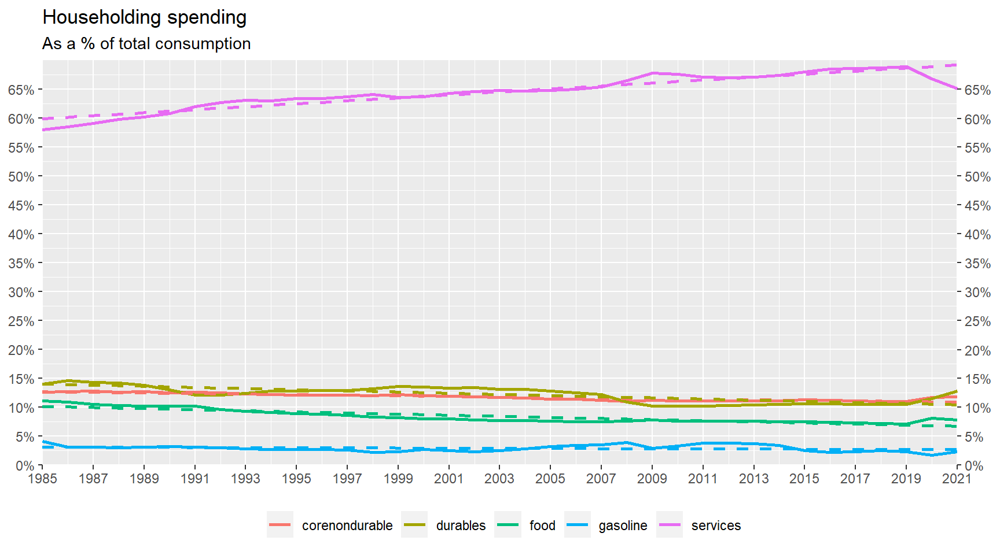
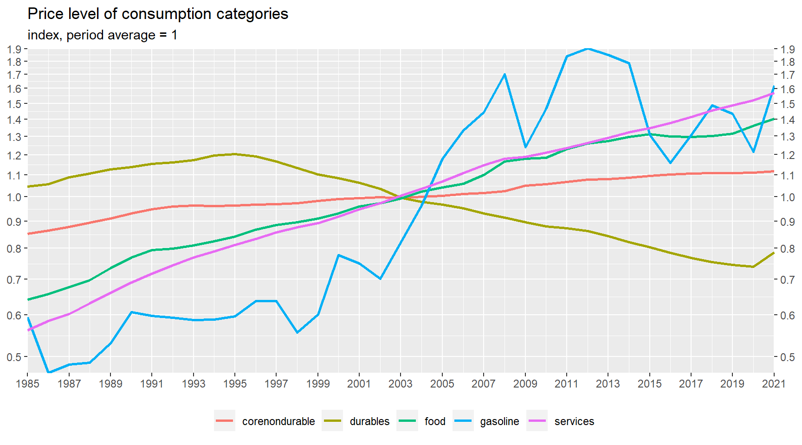
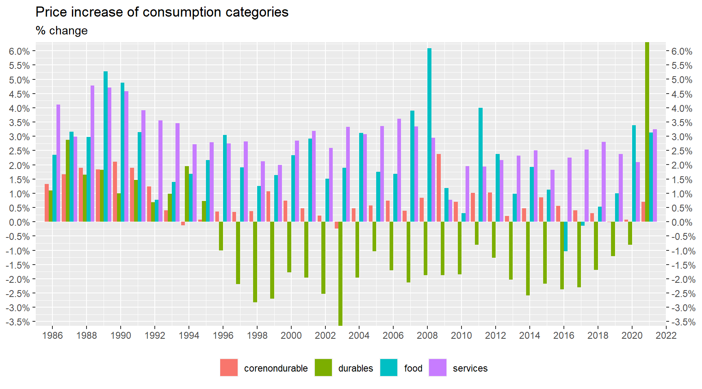
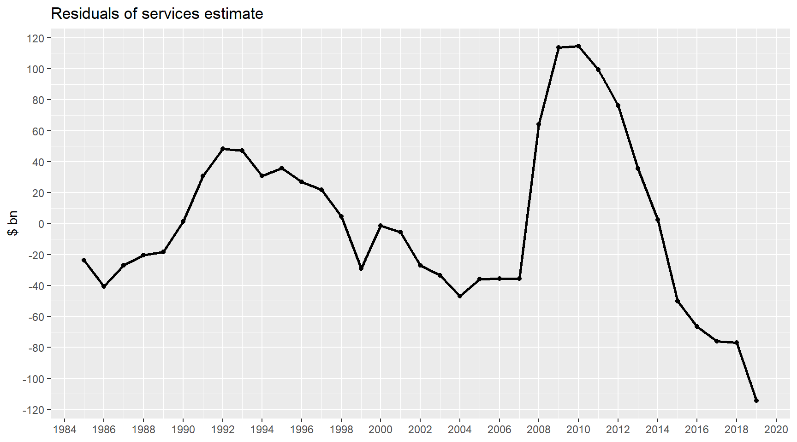
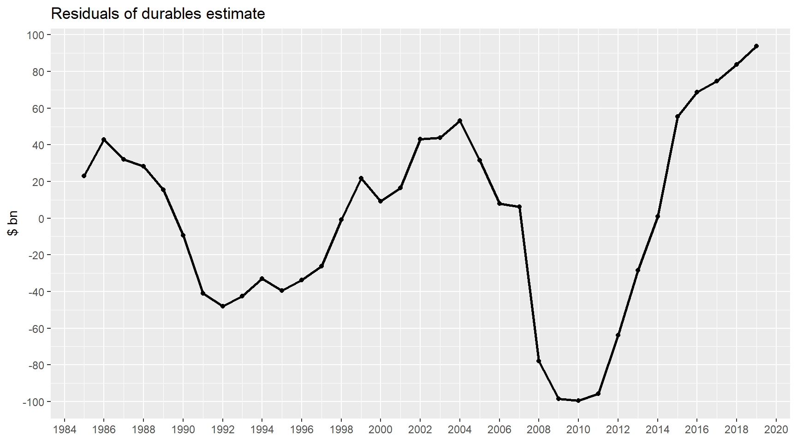

Last updated: 2022-04-28
Checks: 7 0
Knit directory: lpm/
This reproducible R Markdown analysis was created with workflowr (version 1.7.0). The Checks tab describes the reproducibility checks that were applied when the results were created. The Past versions tab lists the development history.
Great! Since the R Markdown file has been committed to the Git repository, you know the exact version of the code that produced these results.
Great job! The global environment was empty. Objects defined in the global environment can affect the analysis in your R Markdown file in unknown ways. For reproduciblity it’s best to always run the code in an empty environment.
The command set.seed(20220204) was run prior to running the code in the R Markdown file. Setting a seed ensures that any results that rely on randomness, e.g. subsampling or permutations, are reproducible.
Great job! Recording the operating system, R version, and package versions is critical for reproducibility.
Nice! There were no cached chunks for this analysis, so you can be confident that you successfully produced the results during this run.
Great job! Using relative paths to the files within your workflowr project makes it easier to run your code on other machines.
Great! You are using Git for version control. Tracking code development and connecting the code version to the results is critical for reproducibility.
The results in this page were generated with repository version 1987ec4. See the Past versions tab to see a history of the changes made to the R Markdown and HTML files.
Note that you need to be careful to ensure that all relevant files for the analysis have been committed to Git prior to generating the results (you can use wflow_publish or wflow_git_commit). workflowr only checks the R Markdown file, but you know if there are other scripts or data files that it depends on. Below is the status of the Git repository when the results were generated:
Ignored files:
Ignored: .Rhistory
Ignored: .Rproj.user/
Ignored: analysis/figure/
Note that any generated files, e.g. HTML, png, CSS, etc., are not included in this status report because it is ok for generated content to have uncommitted changes.
There are no past versions. Publish this analysis with wflow_publish() to start tracking its development.
A ideia desta nota é tentar avaliar se o aumento no consumo de bens nos Estados Unidos no período pós-Covid reflete de fato o aumento de renda (efeito positivo) e o aumento de preços (efeito negativo), e tentar avaliar o que pode acontecer em 2022 e 2023.
Para isso o objetivo é estimar elasticidade preço e renda da demanda por bens.
Pesquisei rapidamente a literatura, e aparentemente o melhor ferramental utilizado em micro para estimar elasticidades (income e price elasticity) ainda é baseado no paper An almost ideal demand system publicado em 1980 pelo Angus Deaton (que ganhou o Nobel de economia em 2015). O modelo proposto por Deaton (AIDS) é uma paroximação de primeira ordem de qualquer sistema de demanda genérico, satisfaz o axioma da escolha e resolve o problema da agregação, ou seja, as propriedades dos agregados refletem as propriedades esperadas do agente maximizador de utilidade. Com isso a demanda agregada pode ser considerada como se fosse o resultado das decisões racionais de um agente (consumidor) representativo.
O ponto de partida é representar as preferências via uma função de custo, que é obtida minimizando o gasto necessário para atingir um certo nível de utilidade.
\[ \ln m_t = \ln c(p_t, U_t) = \alpha_0 + \sum_i \alpha_i \ln p_{it} + \frac{1}{2}\sum_i \sum_j \gamma^*_{ij} \ln p_{it} \ln p_{jt} + U_t \beta_0 \prod_i p_{it}^{\beta_i} \] Onde \(m_t\) é o gasto total, \(P_{it}\) é o preço do bem \(i\) no período \(t\), \(U_t\) é o nível de utilidade.
As derivadas parciais da função custo em relação a preços são as funções de demanda (hicksiana):
\[ x_{it}(p_t, m_t) = \frac{\partial m_t}{\partial p_i} = \frac{m_t}{p_i} \left(\alpha_i + \frac{1}{2}\sum_j \left( \gamma^*_{ij} + \gamma^*_{ji}\right) \ln p_{jt} + \beta_i U_t\beta_0 \prod_k p_{kt}^{\beta_k} \right) \]
Mas o gasto total \(\sum_i p_ix_{it}\) é equivalente a \(m_t\) e reescrevendo \(U_t\) em função de \(p_t\) e \(x_t\) (utilidade indireta) obtem-se:
\[ x_{it}(p_t, m_t) = \frac{\partial m_t}{\partial p_i} = \frac{m_t}{p_i} \left(\alpha_i + \sum_j \gamma_{ij} \ln p_{jt} + \beta_i \ln\left(\frac{m_t}{P_t}\right) \right) \]
onde \(P_t\) é dado por:
\[ \ln P_t = \alpha_0 + \sum_i \alpha_i \ln p_{it} + \frac{1}{2} \sum_i \sum_j \gamma_{ij} \ln p_{it} \ln p_{jt} \] e \(\gamma_{ij} = \frac{1}{2}\left(\gamma^*_{ij} + \gamma^*_{ji} \right)\).
A equação de demanda pode ser simplificada considerand a participação de cada bem no gasto total:
\[ s_{it} = \frac{p_{it} . x_{it}(p_t, m_t)}{m_t} = \alpha_i + \sum_j \gamma_{ij} \ln p_{jt} + \beta_i \ln(m_t/P_t) \]
Algumas restrições derivadas da maximização de utilidade do consumidor (agente representativo) impõem restrições nos coeficientes estimados. Em particular, a soma das participações tem que ser igual a 1, \(\sum_i s_{it} = 1\). Esta condição é garantida se:
\[ \sum_i \alpha_i = 1; \qquad \sum_i \beta_i = 0; \qquad \sum_i \gamma_{ij} = 0 \quad \forall j \]
A condição para não haver ‘ilusão monetária’ (se todos os preços e renda aumentarem na mesma proporção) é garantida por:
\[ \sum_j \gamma_{ij} = 0 \quad \forall i \]
E por fim simetria da demanda hickisiana (compensada) é garantida por \(\gamma_{ij} = \gamma_{ji} \quad \forall i,j\). As propriedades aditividade, homogeneidade, negatividade de demanda compensada e simetria são condições necessárias e suficientes para que o sistema de demanda tenha sido gerado por um consumidor que maximiza utilidade.
A estimação é feita com dados anuais, desde 1985, e as categorias de consumo foram divididas em: duráveis, não duráveis e serviços. Não duráveis, por sua vez, foram subdivididos em: alimentos, gasolina e outros.
O gráfico abaixo mostra a participação de cada uma destas categorias no total de consumo. Serviços constituem a maior parte, seguido por duráves e outros não duráveis.

Os gráficos abaixo mostram a evolução dos preços destas categorias. Fica claro o longo período de deflação em durables interrompido em 2021, bem como a aceleração na inflação de alimentos nos últimos dois anos.


A estimação do sistema de demanda composto pelas categorias acima é feita substituindo a participação determinística no consumo \(s_{it}\) pela participação observada \(w_{it}\). A estimação é feita usando métodos não lineares devido ao índice de preços \(P_t\).
\[ w_{it} = \alpha_i + \sum_j \gamma_{ij} \ln p_{jt} + \beta_i \ln(m_t/P_t) + u_{it} \]
A amostra utilizada para estimação abaixo foi 1985 a 2019. Abaixo os coeficientes estimados:
| alpha | |
|---|---|
| services.share | 0.8207 |
| durables.share | -0.4186 |
| corenondurable.share | -0.2134 |
| food.share | 0.6894 |
| gasoline.share | 0.1219 |
| beta | |
|---|---|
| services.share | -0.0195 |
| durables.share | 0.0609 |
| corenondurable.share | 0.0370 |
| food.share | -0.0682 |
| gasoline.share | -0.0102 |
| services.price | durables.price | corenondurable.price | food.price | gasoline.price | |
|---|---|---|---|---|---|
| services.share | 0.1587 | -0.0285 | -0.0997 | -0.0027 | -0.0278 |
| durables.share | -0.0285 | 0.0475 | -0.0249 | -0.0048 | 0.0108 |
| corenondurable.share | -0.0997 | -0.0249 | 0.0584 | 0.0693 | -0.0032 |
| food.share | -0.0027 | -0.0048 | 0.0693 | -0.0578 | -0.0039 |
| gasoline.share | -0.0278 | 0.0108 | -0.0032 | -0.0039 | 0.0241 |
Aditividade:
sum(coef(aids.result)$alpha)[1] 1sum(coef(aids.result)$beta)[1] 0colSums(coef(aids.result)$gamma) services.price durables.price corenondurable.price
-9.540979e-18 0.000000e+00 -6.938894e-18
food.price gasoline.price
-3.903128e-18 4.336809e-18 Homogeneidade:
rowSums(coef(aids.result)$gamma) services.share durables.share corenondurable.share
-1.655403e-14 -6.710778e-15 -2.818926e-15
food.share gasoline.share
-6.938894e-18 2.607463e-14 Simetria:
isSymmetric(coef(aids.result)$gamma, tol = 1e-10, check.attributes = FALSE)[1] TRUEMonotonicidade (negatividade de demanda compensada):
aidsMono(price.names, "expenditure", coef = coef(aids.result), data = db.test)
Checking the monotonicity condition of an Almost Ideal Demand System (AIDS):
Monotonicity is fulfilled at 35 out of 35 observations (100%)Ou seja, o sistema estimado satisfaz as condições necessárias e suficientes para que tenha sido gerado por um agente representativo maximizador de utilidade.
As definições das elasticidades estão abaixo. A elesticidade renda (gasto) é dada por:
\[ \eta_i = \frac{\partial x_i}{\partial m} \frac{m}{x_i} \]
Marshallian (uncompensated) price elasticity:
\[ \Theta_{ij} = \frac{\partial x_i}{\partial p_j} \frac{p_j}{x_i} \]
Hicksian (compensated) price elasticity:
\[ \Theta^*_{ij} = \Theta_{ij} + \eta_i * s_j \]
Abaixo as eleasticidades estimadas a preço e quantidade de 2019.
Demand Elasticities (original AIDS formulas) Expenditure Elasticities| elasticity | |
|---|---|
| q_services.share | 0.97 |
| q_durables.share | 1.58 |
| q_corenondurable.share | 1.33 |
| q_food.share | 0.05 |
| q_gasoline.share | 0.56 |
| services.price | durables.price | corenondurable.price | food.price | gasoline.price | |
|---|---|---|---|---|---|
| q_services.share | -0.75 | -0.05 | -0.15 | 0.02 | -0.04 |
| q_durables.share | -0.78 | -0.29 | -0.11 | -0.44 | 0.04 |
| q_corenondurable.share | -1.19 | -0.08 | -0.40 | 0.40 | -0.07 |
| q_food.share | 0.79 | -0.49 | 0.76 | -1.16 | 0.05 |
| q_gasoline.share | -0.81 | 0.27 | -0.23 | 0.13 | 0.08 |
| services.price | durables.price | corenondurable.price | food.price | gasoline.price | |
|---|---|---|---|---|---|
| q_services.share | -0.08 | 0.05 | -0.04 | 0.08 | -0.01 |
| q_durables.share | 0.31 | -0.12 | 0.07 | -0.33 | 0.07 |
| q_corenondurable.share | -0.27 | 0.06 | -0.25 | 0.49 | -0.04 |
| q_food.share | 0.82 | -0.49 | 0.76 | -1.16 | 0.06 |
| q_gasoline.share | -0.42 | 0.33 | -0.17 | 0.17 | 0.09 |
E a tabela abaixo mostra quais elasticidades são estatisticamente diferentes de zero:
| Estimate | Std. Error | t value | Pr(>|t|) | |
|---|---|---|---|---|
| Ex q_services.share | 0.97 | 0.04 | 23.97 | 0.00 |
| Ex q_durables.share | 1.58 | 0.21 | 7.44 | 0.00 |
| Ex q_corenondurable.share | 1.33 | 0.11 | 12.42 | 0.00 |
| Ex q_gasoline.share | 0.56 | 0.24 | 2.35 | 0.02 |
| Eh q_services.share durables.price | 0.05 | 0.02 | 2.00 | 0.05 |
| Eh q_services.share food.price | 0.08 | 0.04 | 1.89 | 0.06 |
| Eh q_durables.share services.price | 0.31 | 0.16 | 1.96 | 0.05 |
| Eh q_durables.share corenondurable.price | 0.07 | 0.04 | 1.73 | 0.09 |
| Eh q_durables.share food.price | -0.33 | 0.04 | -7.73 | 0.00 |
| Eh q_corenondurable.share durables.price | 0.06 | 0.04 | 1.77 | 0.08 |
| Eh q_corenondurable.share corenondurable.price | -0.25 | 0.14 | -1.75 | 0.08 |
| Eh q_corenondurable.share food.price | 0.49 | 0.18 | 2.70 | 0.01 |
| Eh q_corenondurable.share gasoline.price | -0.04 | 0.01 | -2.43 | 0.02 |
| Eh q_food.share services.price | 0.82 | 0.43 | 1.91 | 0.06 |
| Eh q_food.share durables.price | -0.49 | 0.06 | -7.90 | 0.00 |
| Eh q_food.share corenondurable.price | 0.76 | 0.28 | 2.69 | 0.01 |
| Eh q_food.share food.price | -1.16 | 0.47 | -2.47 | 0.01 |
| Eh q_food.share gasoline.price | 0.06 | 0.02 | 2.24 | 0.03 |
| Eh q_gasoline.share corenondurable.price | -0.17 | 0.07 | -2.40 | 0.02 |
| Eh q_gasoline.share food.price | 0.17 | 0.08 | 2.24 | 0.03 |
| Em q_services.share services.price | -0.75 | 0.09 | -8.70 | 0.00 |
| Em q_services.share durables.price | -0.05 | 0.02 | -2.53 | 0.01 |
| Em q_services.share corenondurable.price | -0.15 | 0.03 | -4.41 | 0.00 |
| Em q_services.share gasoline.price | -0.04 | 0.01 | -3.46 | 0.00 |
| Em q_durables.share services.price | -0.78 | 0.30 | -2.61 | 0.01 |
| Em q_durables.share durables.price | -0.29 | 0.13 | -2.21 | 0.03 |
| Em q_durables.share corenondurable.price | -0.11 | 0.05 | -2.39 | 0.02 |
| Em q_durables.share food.price | -0.44 | 0.05 | -9.19 | 0.00 |
| Em q_corenondurable.share services.price | -1.19 | 0.30 | -4.01 | 0.00 |
| Em q_corenondurable.share durables.price | -0.08 | 0.03 | -2.19 | 0.03 |
| Em q_corenondurable.share corenondurable.price | -0.40 | 0.13 | -2.96 | 0.00 |
| Em q_corenondurable.share food.price | 0.40 | 0.18 | 2.22 | 0.03 |
| Em q_corenondurable.share gasoline.price | -0.07 | 0.01 | -4.62 | 0.00 |
| Em q_food.share durables.price | -0.49 | 0.06 | -7.87 | 0.00 |
| Em q_food.share corenondurable.price | 0.76 | 0.27 | 2.77 | 0.01 |
| Em q_food.share food.price | -1.16 | 0.46 | -2.50 | 0.01 |
| Em q_food.share gasoline.price | 0.05 | 0.03 | 2.14 | 0.03 |
| Em q_gasoline.share services.price | -0.81 | 0.48 | -1.67 | 0.10 |
| Em q_gasoline.share corenondurable.price | -0.23 | 0.09 | -2.72 | 0.01 |
Elasticidade renda de todos as categorias é positiva (bem normal) exceto alimentos, cuja elasticidade renda é pequena (estatisticamente igual a zero). Bens duráveis e ‘core’ não duráveis são bens de luxo (elasticidade > 1), enquanto que serviços e gasolina podem ser considerados bens normais.
A tabela abaixo mostra a elasticidade renda:
| income elasticity | |
|---|---|
| q_services.share | 0.97 |
| q_durables.share | 1.58 |
| q_corenondurable.share | 1.33 |
| q_food.share | |
| q_gasoline.share | 0.56 |
Nenhum dos bens analisados é bem de Giffen, ou seja, a demanda sempre cai com aumento do próprio preço. Desta vez gasoline é a exceção, com elasticidade preço zero.
Elasticidade preço para serviços (-0.7), duráveis (-0.3) e core não duráveis (-0.4) são maiores que -1, considerados inelásticos a preço. Alimentos (-1.2) são elásticos a preço. E gasolina tem elasticidade estatisticamente igual a zero (+0.1).
A tabela abaixo mostra a elasticidade preço (próprio):
| price elasticity | |
|---|---|
| q_services.share | -0.75 |
| q_durables.share | -0.29 |
| q_corenondurable.share | -0.40 |
| q_food.share | -1.16 |
| q_gasoline.share |
Para determinar se os bens são complementares ou substitutos o correto é olhar a demanda compensada (hicksian). A tabela abaixo contem as elasticidades preço da demanda compensada (itens estatisticamente zero estão com NA).
Mas os resultados obtidos são um pouco controversos. O sistema estimado implica que serviços é complementar a duráveis e alimentos. Implica também que alimentos e duráveis são bens complementares, e que gasolina e core não duráveis são complementares. Não parece fazer muito sentido.
| services.price | durables.price | corenondurable.price | food.price | gasoline.price | |
|---|---|---|---|---|---|
| q_services.share | 0.05 | 0.08 | |||
| q_durables.share | 0.31 | 0.07 | -0.33 | ||
| q_corenondurable.share | 0.06 | 0.49 | -0.04 | ||
| q_food.share | 0.82 | -0.49 | 0.76 | 0.06 | |
| q_gasoline.share | -0.17 | 0.17 |
A tabela abaixo mostra o crescimento do gasto desde a Covid. Queda em 2020 seguida por um substancial aumento em 2021 por conta da renda disponível pelos estímulos.
| year | expenditure | growth |
|---|---|---|
| 2017 | 13239.11 | 0.0430 |
| 2018 | 13913.53 | 0.0509 |
| 2019 | 14428.68 | 0.0370 |
| 2020 | 14047.57 | -0.0264 |
| 2021 | 15741.57 | 0.1206 |
Abaixo, vemos a variação de preços (inflação) das categorias:
| year | durables.price | food.price | gasoline.price | corenondurable.price | services.price |
|---|---|---|---|---|---|
| 2017 | -2.3 | -0.1 | 13.0 | 0.4 | 2.5 |
| 2018 | -1.7 | 0.5 | 13.7 | 0.3 | 2.8 |
| 2019 | -1.2 | 1.0 | -3.5 | 0.0 | 2.4 |
| 2020 | -0.8 | 3.4 | -15.3 | 0.1 | 2.1 |
| 2021 | 6.3 | 3.1 | 33.5 | 0.7 | 3.3 |
Destaque para os preços de duráveis que aumentaram mais de 6% em 2021 e para o preço da gasolina, com queda grande em 2020 seguida por forte aumento em 2021. Alimentos também sairam um pouco do ‘padrão’ subindo mais de 3% em cada um dos últimos dois anos.
Duráveis: considerando a elasticidade renda e eleasticidade preço estimadas, a quantidade consumida de duráveis deveria ter caído aproximadamente -3.9% em 2020 e subido 17.3 em 2021. Os valores observados estão na tabela abaixo.
| year | q_durables |
|---|---|
| 2017 | 0.0626 |
| 2018 | 0.0700 |
| 2019 | 0.0426 |
| 2020 | 0.0769 |
| 2021 | 0.1793 |
Serviços: já para serviços, as eleasticidades estimadas sugerem queda de -4.1% em 2020 e aumento de 9.3% em 2021. A tabela abaixo contem os valores observados. Em ambos os anos pós covid, a quantidade de serviços consumida ficou abaixo da projetada pelas elasticidades, provavelmente reflexo das restrições a mobilidade impostas pela pandemia.
| year | q_services |
|---|---|
| 2017 | 0.0178 |
| 2018 | 0.0241 |
| 2019 | 0.0166 |
| 2020 | -0.0752 |
| 2021 | 0.0578 |
Porém, essa hipótese de restrição a mobilidade pode ser contestada se olharmos o resíduo do modelo de demanda para serviços. O gráfico abaixo deixa claro que, mesmo antes da Covid, a demanda por serviços estava sendo superestimada pelo modelo.

Olhando agora os resíduos do modelo para a demanda por duráveis, notamos que houve uma consistente subestimação da demanda nos últimos anos.

O exercício anterior foi uma tentativa aproximada de quantificar a demanda por duráveis e serviços, uma vez que não levou em conta outros preços na economia.
A tabela abaixo projeta o crescimento de quantidade esperado para os anos de 2020 e 2021 com base no modelo estimado de 1985 a 2019.
| year | q_services | q_durables | q_corenondurable | q_food | q_gasoline |
|---|---|---|---|---|---|
| 2017 | 1.9 | 6.0 | 1.8 | 4.5 | 0.79 |
| 2018 | 2.4 | 6.6 | 2.7 | 3.7 | 0.59 |
| 2019 | 2.0 | 3.7 | 2.8 | 1.3 | 0.17 |
| 2020 | -3.4 | -8.0 | -3.5 | -2.8 | -5.32 |
| 2021 | 7.5 | 15.1 | 10.4 | -1.5 | 9.07 |
E abaixo os valores de fato observados nestes anos:
| year | q_services | q_durables | q_corenondurables | q_food | q_gasoline |
|---|---|---|---|---|---|
| 2017 | 1.8 | 6.3 | 3.0 | 3.6 | -0.48 |
| 2018 | 2.4 | 7.0 | 3.4 | 2.3 | -0.57 |
| 2019 | 1.7 | 4.3 | 4.1 | 2.0 | -0.13 |
| 2020 | -7.5 | 7.7 | 2.9 | 7.6 | -13.70 |
| 2021 | 5.8 | 17.9 | 12.4 | 4.4 | 9.10 |
Abaixo o residuo, a diferença entre as quantidades observadas e a projetada pelo sistema de demanda.
| year | q_services | q_durables | q_corenondurables | q_food | q_gasoline |
|---|---|---|---|---|---|
| 2017 | -0.075 | 0.26 | 1.15 | -0.92 | -1.270 |
| 2018 | 0.033 | 0.40 | 0.69 | -1.39 | -1.163 |
| 2019 | -0.347 | 0.55 | 1.33 | 0.74 | -0.302 |
| 2020 | -4.115 | 15.65 | 6.40 | 10.38 | -8.378 |
| 2021 | -1.724 | 2.81 | 2.00 | 5.89 | 0.024 |
Posso fazer a mesma conta com os valores monetários ao invés de quantidade, usando o valor total de gasto realmente observado. Valores abaixo em USD bn.
| year | s_services | s_durables | s_conrenondurable | s_food | s_gasoline |
|---|---|---|---|---|---|
| 2016 | -67 | 69 | -3 | 3 | -1 |
| 2017 | -76 | 75 | 13 | -6 | -6 |
| 2018 | -77 | 84 | 24 | -20 | -11 |
| 2019 | -114 | 94 | 45 | -13 | -11 |
| 2020 | -531 | 321 | 145 | 98 | -33 |
| 2021 | -756 | 440 | 195 | 169 | -48 |
Abaixo as elasticidades estimadas considerando o período todo de 1985 a 2021.
Aditividade:
sum(coef(aids.result.full)$alpha)[1] 1sum(coef(aids.result.full)$beta)[1] 0colSums(coef(aids.result.full)$gamma) services.price durables.price corenondurable.price
6.938894e-18 8.673617e-19 -3.469447e-18
food.price gasoline.price
-2.602085e-18 -1.734723e-18 Homogeneidade:
rowSums(coef(aids.result.full)$gamma) services.share durables.share corenondurable.share
4.713209e-13 1.526045e-13 -7.372575e-15
food.share gasoline.share
-2.168404e-17 -6.165311e-13 Simetria:
isSymmetric(coef(aids.result.full)$gamma, tol = 1e-10, check.attributes = FALSE)[1] TRUEMonotonicidade (negatividade de demanda compensada):
aidsMono(price.names, "expenditure", coef = coef(aids.result.full), data = data.frame(db))
Checking the monotonicity condition of an Almost Ideal Demand System (AIDS):
Monotonicity is fulfilled at 37 out of 37 observations (100%)Ou seja, o sistema estimado satisfaz as condições necessárias e suficientes para que tenha sido gerado por um agente representativo maximizador de utilidade.
Abaixo as eleasticidades estimadas a preço e quantidade de 2021.
Demand Elasticities (original AIDS formulas) Expenditure Elasticities| elasticity | |
|---|---|
| q_services.share | 1.11 |
| q_durables.share | 1.41 |
| q_corenondurable.share | 0.84 |
| q_food.share | -0.18 |
| q_gasoline.share | 0.37 |
| services.price | durables.price | corenondurable.price | food.price | gasoline.price | |
|---|---|---|---|---|---|
| q_services.share | -1.07 | -0.06 | 0.01 | 0.05 | -0.04 |
| q_durables.share | -0.53 | -0.53 | -0.03 | -0.32 | 0.00 |
| q_corenondurable.share | 0.23 | 0.03 | -1.04 | -0.02 | -0.04 |
| q_food.share | 1.30 | -0.36 | 0.08 | -0.90 | 0.06 |
| q_gasoline.share | -0.61 | 0.14 | -0.14 | 0.13 | 0.10 |
| services.price | durables.price | corenondurable.price | food.price | gasoline.price | |
|---|---|---|---|---|---|
| q_services.share | -0.35 | 0.08 | 0.14 | 0.14 | -0.01 |
| q_durables.share | 0.39 | -0.35 | 0.14 | -0.21 | 0.04 |
| q_corenondurable.share | 0.77 | 0.14 | -0.94 | 0.04 | -0.02 |
| q_food.share | 1.19 | -0.38 | 0.06 | -0.92 | 0.05 |
| q_gasoline.share | -0.37 | 0.19 | -0.09 | 0.16 | 0.11 |
E a tabela abaixo mostra quais elasticidades são estatisticamente diferentes de zero:
| Estimate | Std. Error | t value | Pr(>|t|) | |
|---|---|---|---|---|
| Ex q_services.share | 1.11 | 0.07 | 15.14 | 0.00 |
| Ex q_durables.share | 1.41 | 0.21 | 6.77 | 0.00 |
| Ex q_corenondurable.share | 0.84 | 0.26 | 3.19 | 0.00 |
| Eh q_services.share services.price | -0.35 | 0.13 | -2.73 | 0.01 |
| Eh q_services.share durables.price | 0.08 | 0.04 | 2.13 | 0.04 |
| Eh q_durables.share services.price | 0.39 | 0.20 | 1.94 | 0.05 |
| Eh q_durables.share durables.price | -0.35 | 0.13 | -2.60 | 0.01 |
| Eh q_durables.share corenondurable.price | 0.14 | 0.04 | 3.44 | 0.00 |
| Eh q_durables.share food.price | -0.21 | 0.05 | -4.57 | 0.00 |
| Eh q_corenondurable.share durables.price | 0.14 | 0.04 | 3.49 | 0.00 |
| Eh q_corenondurable.share corenondurable.price | -0.94 | 0.35 | -2.69 | 0.01 |
| Eh q_food.share durables.price | -0.38 | 0.07 | -5.11 | 0.00 |
| Eh q_gasoline.share gasoline.price | 0.11 | 0.06 | 1.75 | 0.08 |
| Em q_services.share services.price | -1.07 | 0.17 | -6.39 | 0.00 |
| Em q_services.share durables.price | -0.06 | 0.04 | -1.70 | 0.09 |
| Em q_services.share gasoline.price | -0.04 | 0.02 | -2.35 | 0.02 |
| Em q_durables.share durables.price | -0.53 | 0.11 | -4.89 | 0.00 |
| Em q_durables.share food.price | -0.32 | 0.04 | -8.67 | 0.00 |
| Em q_corenondurable.share corenondurable.price | -1.04 | 0.32 | -3.25 | 0.00 |
| Em q_corenondurable.share gasoline.price | -0.04 | 0.02 | -1.73 | 0.09 |
| Em q_food.share durables.price | -0.36 | 0.08 | -4.70 | 0.00 |
| Em q_gasoline.share corenondurable.price | -0.14 | 0.07 | -1.85 | 0.07 |
| Em q_gasoline.share gasoline.price | 0.10 | 0.06 | 1.82 | 0.07 |
Para pensar no cenário de 2022 temos que fazer hipóteses sobre (a) aumento do gasto total e (b) variação de preços.
db.future <- db %>%
add_case(
year = 2022,
durables.price = tail(., 1)$durables.price * 1,
food.price = tail(.,1)$food.price * 1.035,
gasoline.price = tail(.,1)$gasoline.price * 1,
corenondurable.price = tail(.,1)$corenondurable.price * 1.01,
services.price = tail(.,1)$services.price * 1.04,
expenditure = tail(.,1)$expenditure * 1.1
)A tabela abaixo inclui a projeção para 2022 com base nas hipóteses acima descritas:
| year | q_services | q_durables | q_corenondurable | q_food | q_gasoline |
|---|---|---|---|---|---|
| 2017 | 1.7 | 6.0 | 3.2 | 4.19 | 0.89 |
| 2018 | 2.2 | 6.5 | 4.0 | 3.57 | 0.53 |
| 2019 | 1.8 | 4.1 | 3.7 | 1.71 | 0.14 |
| 2020 | -4.3 | -6.4 | -1.3 | -0.13 | -4.18 |
| 2021 | 8.2 | 12.2 | 8.9 | -1.85 | 6.75 |
| 2022 | 6.7 | 10.9 | 8.0 | -0.51 | 2.01 |
Em termos consolidados, e usando o share estimado para cada categoria, podemos inferir qual seria o crescimento real do consumo:
| year | consumption_growth |
|---|---|
| 2018 | 2.9 |
| 2019 | 2.2 |
| 2020 | -3.8 |
| 2021 | 8.0 |
| 2022 | 6.7 |
O que implicaria, implicitamente, em um caminho para inflação como na tabela abaixo. O pce é calculado usando a média aritmética dos pesos de \(w_{i,t}\) e \(w_{i,t-1}\).
| year | pce | infla |
|---|---|---|
| 2017 | 1.8 | 1.8 |
| 2018 | 2.1 | 2.1 |
| 2019 | 1.5 | 1.4 |
| 2020 | 1.3 | 0.0 |
| 2021 | 3.9 | 3.1 |
| 2022 | 3.1 | 5.0 |
R version 4.1.3 (2022-03-10)
Platform: x86_64-w64-mingw32/x64 (64-bit)
Running under: Windows 10 x64 (build 19044)
Matrix products: default
locale:
[1] LC_COLLATE=English_United States.1252
[2] LC_CTYPE=English_United States.1252
[3] LC_MONETARY=English_United States.1252
[4] LC_NUMERIC=C
[5] LC_TIME=English_United States.1252
attached base packages:
[1] stats graphics grDevices utils datasets methods base
other attached packages:
[1] miscTools_0.6-27 micEconAids_0.6-19 micEcon_0.6-17
[4] lmtest_0.9-40 zoo_1.8-10 DatastreamDSWS2R_1.8.3
[7] fable_0.3.1 feasts_0.2.2 fabletools_0.3.2
[10] tsibbledata_0.4.0 tsibble_1.1.1 ggplot2_3.3.5
[13] lubridate_1.8.0 tidyr_1.2.0 dplyr_1.0.8
[16] tibble_3.1.6 fpp3_0.4.0 workflowr_1.7.0
loaded via a namespace (and not attached):
[1] nlme_3.1-157 fs_1.5.2 xts_0.12.1
[4] webshot_0.5.3 httr_1.4.2 rprojroot_2.0.3
[7] tools_4.1.3 bslib_0.3.1 utf8_1.2.2
[10] R6_2.5.1 DBI_1.1.2 mgcv_1.8-40
[13] colorspace_2.0-3 systemfit_1.1-24 withr_2.5.0
[16] tidyselect_1.1.2 processx_3.5.3 compiler_4.1.3
[19] git2r_0.30.1 rvest_1.0.2 cli_3.3.0
[22] xml2_1.3.3 sandwich_3.0-1 labeling_0.4.2
[25] sass_0.4.1 scales_1.2.0 callr_3.7.0
[28] rappdirs_0.3.3 systemfonts_1.0.4 stringr_1.4.0
[31] digest_0.6.29 svglite_2.1.0 rmarkdown_2.14
[34] pkgconfig_2.0.3 htmltools_0.5.2 fastmap_1.1.0
[37] collapse_1.7.6 highr_0.9 rlang_1.0.2
[40] rstudioapi_0.13 jquerylib_0.1.4 farver_2.1.0
[43] generics_0.1.2 jsonlite_1.8.0 car_3.0-12
[46] distributional_0.3.0 magrittr_2.0.3 kableExtra_1.3.4
[49] Formula_1.2-4 Matrix_1.4-1 Rcpp_1.0.8.3
[52] munsell_0.5.0 fansi_1.0.3 abind_1.4-5
[55] lifecycle_1.0.1 plm_2.6-1 stringi_1.7.6
[58] whisker_0.4 yaml_2.3.5 carData_3.0-5
[61] MASS_7.3-57 grid_4.1.3 parallel_4.1.3
[64] promises_1.2.0.1 bdsmatrix_1.3-4 crayon_1.5.1
[67] lattice_0.20-45 splines_4.1.3 knitr_1.39
[70] anytime_0.3.9 ps_1.7.0 pillar_1.7.0
[73] codetools_0.2-18 glue_1.6.2 evaluate_0.15
[76] getPass_0.2-2 vctrs_0.4.1 httpuv_1.6.5
[79] Rdpack_2.3 foreach_1.5.2 gtable_0.3.0
[82] purrr_0.3.4 assertthat_0.2.1 xfun_0.30
[85] rbibutils_2.2.8 later_1.3.0 viridisLite_0.4.0
[88] iterators_1.0.14 maxLik_1.5-2 ellipsis_0.3.2